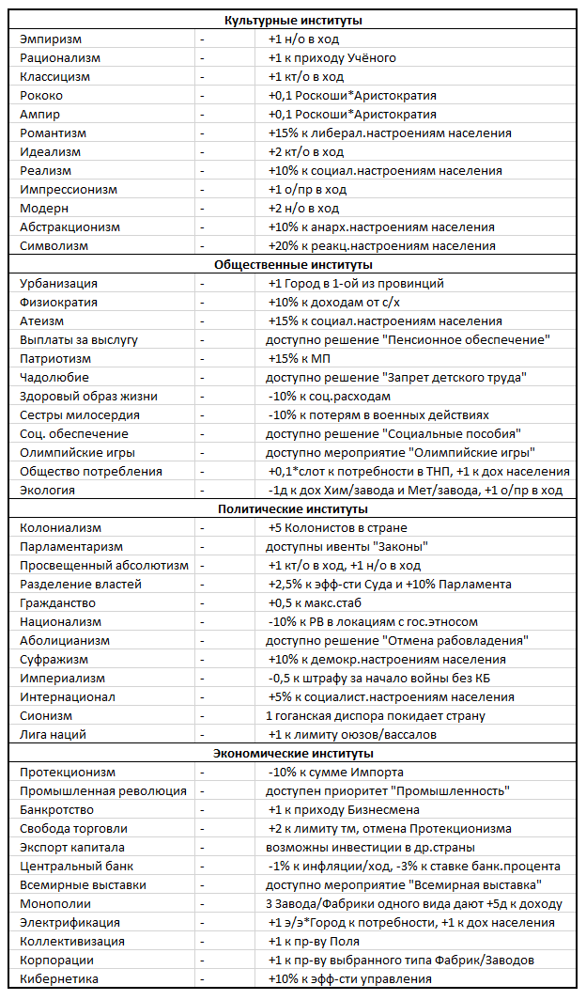

Традиции – особенности культурного кода титульного этноса страны. Традиции различны у этносов разных культурных групп.
Для внедрения той или иной культурной традиции нужно потратить указанное в балансе кол-во кт/о.
Особая постройка – это Чудо света или постройка с особыми свойствами, которую можно возвести строго в определенной локации. Часть таких построек уже возведены в мире и отражены в балансах игроков записями зеленым цветом. Часть особых построек может быть построены игроками в ходе игры.
Как только в стране становится доступным постройка Особой постройки – информация об этом появляется в балансе страны. 